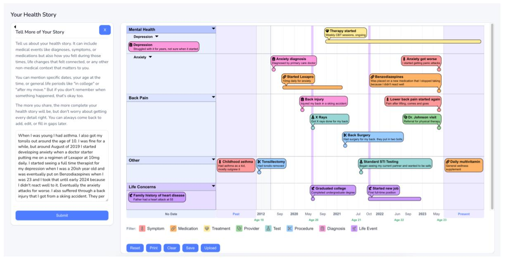

HealthTale — visualizing your health story
When you describe your health history to a new doctor, it probably doesn't flow neatly. You jump to what feels most important, organize around concerns rather than dates, use language like "a few years back" or "right around when I started that job." Health histories are organized around meaning, not chronology.
HealthTale meets patients in that natural way of speaking. You describe your health history however feels right, and the system transforms it into a structured, timeline visualization you can bring into a clinical encounter. The goal is to help patients feel heard and help clinicians understand not just the facts, but how the patient frames their own experience.
